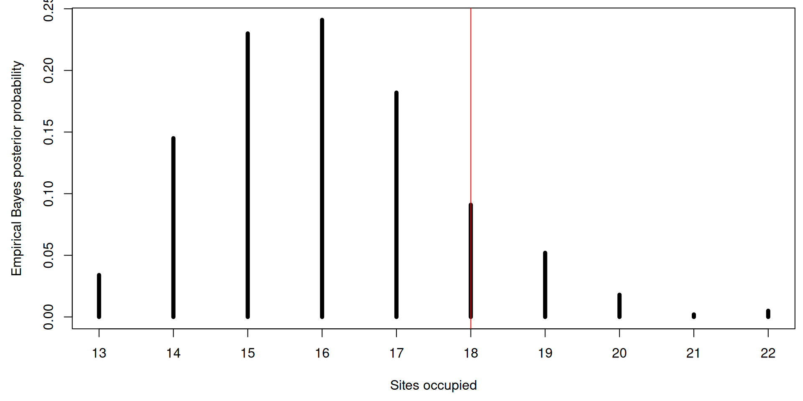
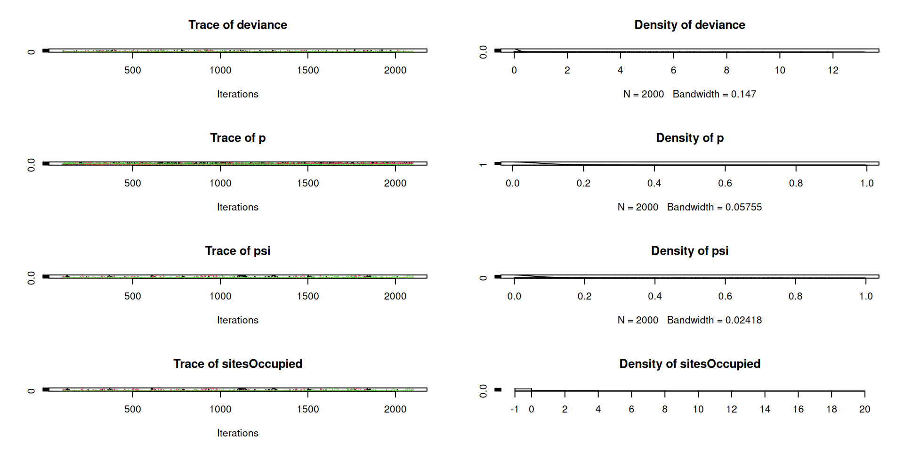

Occupancy models:
simulation and fitting
WILD(FISH) 8390
Inference for Models of Fish and Wildlife Population Dynamics
Motivation
Simulation
Classical analysis with ‘unmarked’
Bayesian analysis with ‘JAGS’
We often want to do logistic regression, but the data are subject to measurement error.
Specifically, wildlife data are often fraught with false negatives (ie, the species was there but we didn’t detect it).
Ignoring this source of measurement error can result in misleading inferences.
Occupancy will be under-estimated
Habitat associations may be incorrect
The model for the state process is the same as logistic regression:
\[ \begin{gather*} \mathrm{logit}(\psi_i) = \beta_0 + \beta_1 x_{i1} + \beta_2 x_{i2} + \cdots \\ z_i \sim \mathrm{Bern}(\psi_i) \end{gather*} \]
Model for the observation process conditional on the state process:
\[ \begin{gather*} \mathrm{logit}(p_{ij}) = \alpha_0 + \alpha_1 x_{ij1} + \alpha_2 x_{ij2} + \cdots \\ y_{ij} \sim \mathrm{Bern}(z_i\times p_{ij}) \end{gather*} \]
Assumptions of the basic single-season occupancy models:
Population closure
Occupancy state (presence/absence) constant over time
Statistical independence
Occupancy state at one site has no impact on occupancy of other sites
Detections are independent, conditional on occupancy state
Variation in \(\psi\) and \(p\) described by covariates
Simplest case with no covariates:
Observations
Install and load the package
Documentation (help files)
Documentation (vignettes)
Unlike standard model fitting functions such as lm and glm that require data to be in data.frames, data for unmarked' has to be formatted in anunmarkedFrame`.
Fit the single-season occupancy model
Call:
occu(formula = ~1 ~ 1, data = umf)
Occupancy (logit-scale):
Estimate SE z P(>|z|)
-14.6 21305 -0.000685 0.999
Detection (logit-scale):
Estimate SE z P(>|z|)
-7.67 21961 -0.000349 1
AIC: 4
Number of sites: 20Estimates obtained using maximum likelihood
Occupancy estimate (\(\hat{\psi}\))
Backtransformed linear combination(s) of Occupancy estimate(s)
Estimate SE LinComb (Intercept)
4.63e-07 0.00986 -14.6 1
Transformation: logistic Detection probability estimate (\(\hat{p}\))
Unconditional occupancy \(\psi=\Pr(z=1)\)
Conditional occupancy \(\psi^* = \Pr(z_i=1|y_{i})\)
Conditional occupancy estimates only apply to sites in the sample, at the time of sampling
In ‘unmarked’, conditional occupancy is computed using Empirical Bayes methods, with the ranef and bup functions. In JAGS, full Bayesian inference is used instead.
Conditional occupancy estimates can be used to answer questions like:
y.1 y.2 y.3 y.4 psi.unconditional.Predicted psi.unconditional.SE
1 0 0 0 0 0 0.01
2 0 0 0 0 0 0.01
3 0 0 0 0 0 0.01
4 0 0 0 0 0 0.01
5 0 0 0 0 0 0.01
6 0 0 0 0 0 0.01
7 0 0 0 0 0 0.01
8 0 0 0 0 0 0.01
9 0 0 0 0 0 0.01
10 0 0 0 0 0 0.01
11 0 0 0 0 0 0.01
12 0 0 0 0 0 0.01
13 0 0 0 0 0 0.01
14 0 0 0 0 0 0.01
15 0 0 0 0 0 0.01
16 0 0 0 0 0 0.01
17 0 0 0 0 0 0.01
18 0 0 0 0 0 0.01
19 0 0 0 0 0 0.01
20 0 0 0 0 0 0.01
psi.unconditional.lower psi.unconditional.upper psi.conditional
1 0 1 0
2 0 1 0
3 0 1 0
4 0 1 0
5 0 1 0
6 0 1 0
7 0 1 0
8 0 1 0
9 0 1 0
10 0 1 0
11 0 1 0
12 0 1 0
13 0 1 0
14 0 1 0
15 0 1 0
16 0 1 0
17 0 1 0
18 0 1 0
19 0 1 0
20 0 1 0How many sites were occupied?
We can answer this using posterior prediction.

The posterior median (or mean or mode) can be used as a point estimate:
Quantiles can be used for the 95% confidence interval:
Bayesian methods incorporate prior distributions into inferences.
We often have prior information, and it’s easy to use.
If we don’t have prior information, we can use vague priors and obtain similar inferences as likelihood-based methods.
Ultimately, we want the posterior distribution of the model parameters. We’ll use MCMC to obtain samples from this distribution.
A reminder…
The basic steps of a Bayesian analysis with JAGS are:
The BUGS model file: occupancy-model.jag
model {
psi ~ dunif(0,1) # Prior for occupancy parameter
p ~ dunif(0,1) # Prior for detection probability
for(i in 1:nSites) {
z[i] ~ dbern(psi) # Latent presence/absence
for(j in 1:nOccasions) {
y[i,j] ~ dbern(z[i]*p) # Model for the data
}
}
sitesOccupied <- sum(z) # Total number of sites occupied
}Put data in a named list
Initial values
Parameters to monitor
This function will compile the model, run adaptive MCMC, and then draw posterior samples using 3 Markov chains run in parallel.
Iterations = 101:2100
Thinning interval = 1
Number of chains = 3
Sample size per chain = 2000
1. Empirical mean and standard deviation for each variable,
plus standard error of the mean:
Mean SD Naive SE Time-series SE
deviance 0.8324 1.5492 0.020000 0.04832
p 0.3118 0.3093 0.003993 0.01293
psi 0.1603 0.2100 0.002711 0.01583
sitesOccupied 2.5653 4.4207 0.057072 0.33810
2. Quantiles for each variable:
2.5% 25% 50% 75% 97.5%
deviance 0.000000 0.00000 0.0000 1.0588 5.3920
p 0.002431 0.03926 0.1851 0.5617 0.9517
psi 0.001886 0.02606 0.0693 0.2002 0.7902
sitesOccupied 0.000000 0.00000 0.0000 3.0000 16.0000
Create a self-contained R script or Rmarkdown file to do the following:
Import the Canada Warbler data ("cawa_data_2017_occu.csv") and compute basic summary stats like we did earlier.
Fit the single-season (static) occupancy model using ‘unmarked’ and ‘JAGS’.
Create a data.frame to compare the estimates of \(\psi\), \(p\), and “nSitesOccupied” from the two analyses. Compare point estimates and 95% CIs. Describe any differences you see in the estimates.
.R or .Rmd file to ELC by 5:00pm on Monday.